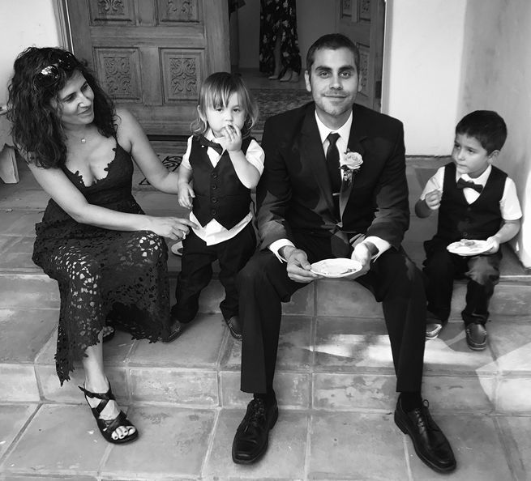

A little while back I began working with an amazing tech team that helps people build complex online courses. I was creating my opus of a program, Confidence University, and I wanted it to be the most dynamic, engaging, and effective program it could possibly be.
To make this happen, I sought the guidance of a consultant who specialized in creating these kinds of courses. I purchased his online training program and found it very informative. I told him so, and we decided to work together on Confidence University, with his team managing all the back-end technology.
We had our first few meetings scheduled and I was buzzing with excitement. This program was going to be so powerful and was going to be able to reach so many people. Until then, I often had to turn people away who couldn’t fly out to attend one of my live events or be in my ongoing Mastermind program. My other online training programs were not responsive or interactive at all, so it didn’t capture the highly effective element of engagement and accountability that made coaching so effective.
But Confidence University was going to have all of that, and be accessible anywhere in the world. It was going to be a key step in me carrying out my mission to eradicate social anxiety and instill confidence all over the world.
Our first meeting went great, and he helped me make some key decisions about how to structure the program. I began laying out the material, eagerly anticipating our next meeting. Then I received this email:
Hi Aziz,
I'll be back in New York at the beginning of the week. I am currently at infusion con and I'm speaking at Memberuim on Friday.
I do have one favor to ask you. Would you mind shooting a quick testimonial for me?
Actually let's push the limits lol
Can you shoot two short ones?
One about the course and one about the value you've gotten from our strategic calls.
That would be amazing and thank you very much
Sincerely,
M
My initial reaction was one of surprise. A video testimonial? We had barely started working together. I enjoyed our initial meetings and had benefited from his course, but we had barely gotten started. The main project of Confidence University wasn’t even underway, and I had no idea what it would be like to work with this tech team. It was a clear no for me.
But then… Enter the voice of the approval seeker: What if I say no and he gets upset with me? What if it manifests as him not giving me his knowledge, or secretly sabotaging our project together? What if he’s mad at me?
“Feh!” I said, waving my hand through the air. Enough of that nonsense. I opened up my computer and sent this email:
Hey Mike,
I like the bold ask. A bit too soon.
I appreciate the beginning of working together here, but don’t feel ready to offer official feedback yet.
I’ll finish putting together the course plan, then we’ll get together and figure out the scope of work and discuss moving forward.
If all goes well, and I love our work together, I will be more than happy to shoot some testimonials.
Thanks,
Aziz
ABOUT THE AUTHOR

Dr. Aziz is a psychologist, author, and coach who is internationally known as the world’s leading expert on confidence. Through his coaching, books, videos, and online media, he has helped thousands of people break through shyness, social anxiety, and self-doubt to create richer, happier, more confident lives.
What is most remarkable about Dr. Aziz is his own personal struggle with self-doubt and social anxiety. After reaching a low point in his own life, he made a powerful decision to do whatever it would take to get the confidence he always wanted. This lead to a passionate pursuit of studying confidence from every source, including books, audio programs, seminars, and a doctorate degree in clinical psychology from Stanford and Palo Alto Universities.
Dr. Aziz is the author of the best-selling books, The Solution To Social Anxiety and The Art of Extraordinary Confidence , as well as over a dozen e-books, including 5 Steps To Unleash Your Inner Confidence . He is the host of the podcast Shrink for The Shy Guy and the YouTube show, “The Art of Extraordinary Confidence.” Dr. Aziz is most passionate about his direct work with individuals and groups in coaching programs and weekend seminars. To find out more about all of the resources Dr. Aziz offers, go to SocialConfidenceCenter.com.
Dr. Aziz lives in Portland, Oregon with his wife and two boys. To find out more about his personal story and inspiring journey to confidence, visit the “About” section of the website listed above.
ADDITIONAL RESOURCES